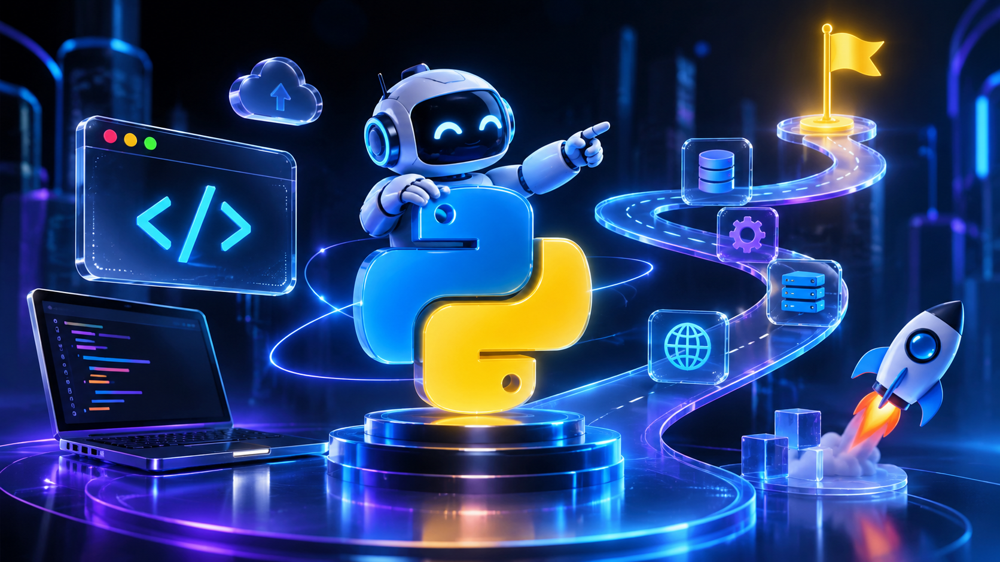

Python Full Stack Developer Roadmap
Go from Python basics to frontend, Flask, Django, APIs, databases and live deployment. Every topic has videos in Hindi and English plus free notes. Learn a little, then build a project.
- Beginner to Job-ready
- 9 steps
- Hindi & English

Big projects and final tips
Put these in your portfolio and host them live.
Big projects
- Blog platform with login, comments, admin panel
- E-commerce site (cart, orders, payment)
- Role-based dashboard (admin/user, OTP, profile, uploads)
- Job portal (recruiter and candidate roles)
- Real-time chat app
- Task / project management tool (like Trello)
Final tips
- Build at least 5 real projects and host them live.
- Push all code to GitHub daily.
- Read the official docs (Python, Django, Flask).
- Make a clean resume and LinkedIn profile.
- Practice interview questions: Python, OOP, SQL, Django, REST APIs.
- Be consistent. Daily practice beats long weekend sessions.
Skills checklist
If you can do all of these, you are ready to apply for Python full stack jobs.
About this Python full stack roadmap
What you will learn, who it is for and how to use it.
What you will learn
You start with Python, Git and VS Code, then build the frontend with HTML, CSS and JavaScript (React is optional). Next comes the backend with Flask, Django and FastAPI, databases like MySQL, PostgreSQL and MongoDB, API security with JWT, testing, Docker and deployment on Render, Railway or a VPS.
Videos in Hindi and English
Use the Hindi / English switch above the videos of every topic. Click a topic in the top bar, or swipe left and right, to move between steps. Each topic has free notes and official docs next to the videos.
Keep going
Explore more learning roadmaps, see our services, or contact us if you want help with a project.
Frequently asked questions
Quick answers about learning Python full stack development.
Should I learn Flask or Django first?
Start with Flask because it is simple and teaches routes, templates and sessions. Then learn Django, which is full featured and widely used in jobs.
Are the videos available in Hindi and English?
Yes. Use the Hindi / English switch above the videos of any topic, or the switch at the top to change every topic at once. Notes sit beside the videos.
Do I need to learn React for Python full stack?
React is optional but recommended. Many companies expect you to connect a React frontend to a Django or FastAPI backend.
Is this Python full stack roadmap free?
Yes. The roadmap, videos and notes are free, and your ticked steps are saved in your own browser.
Can I learn Python full stack development fully in Hindi?
Yes. Pick Hindi above the videos of any topic. If a topic has no Hindi video yet, the English video is shown so you never get stuck.
Which database should I learn first for Python full stack?
Start with SQL using MySQL or PostgreSQL, then try MongoDB and Redis. Django and Flask both work very well with SQL databases.
What should I build to get a Python full stack job?
Build at least 5 projects such as a blog with login, an e-commerce site, a role-based dashboard and a job portal. Host them live and push the code to GitHub.